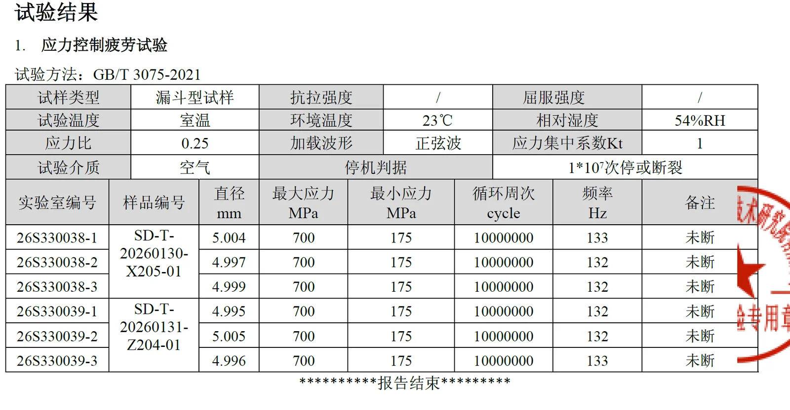
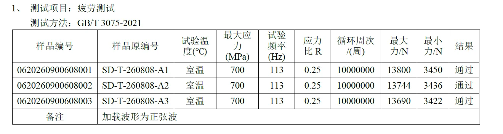

High-strength, high-purity large-scale steel flywheel rotors, designed for flywheel energy storage systems, with 10-million-cycle high-cycle fatigue testing passed and volume delivery to leading manufacturers.
Our core rotor parts have been delivered in volume to leading domestic flywheel energy storage manufacturers, with center-sampled high-cycle fatigue verified through 10⁷ cycles, supporting long-term high-speed service of large-capacity systems.
From forging and quench-and-temper to precision machining and full-process UT inspection, we stand by data-driven quality and traceable testing, making every rotor verifiable.
| Application | Flywheel Energy Storage Systems |
|---|---|
| Fatigue Performance | Passed 10 million high-cycle fatigue cycles |
| Internal Quality | Full-Process UT Inspection |
| Verification | Center-Sampled · 10⁷ Cycles |


High-power-density, long-life flywheel rotor forgings supporting various frequency-regulation and energy-recovery systems.
Short-cycle high-frequency charge/discharge to smooth renewable integration and stabilize the grid.
Recovers train braking energy, cutting traction consumption and improving operating economy.
Millisecond-level high-quality power support for data centers and precision manufacturing.
Flywheel rotors store kinetic energy at high speed, demanding dense, uniform structure and fatigue reliability — forging is the recognized preferred forming method.
Integral forging eliminates cast defects with continuous grain flow along stress directions — a reliable base material for high-speed rotation.
Center-sampled verification with 10-million-cycle high-cycle fatigue testing passed, supporting long-term high-speed service.
Forging, quench-and-temper and precision machining under one roof to cut transfer risk and balance strength with toughness.
Step-by-step ultrasonic inspection from forging to finish — defects found early, every batch traceable with reports included.
Every process is recorded, making each flywheel rotor forging verifiable and traceable.
Stress-controlled fatigue tests per GB/T 3075-2021: max stress 700MPa, stress ratio 0.25, sine-wave loading. All specimens completed 10,000,000 cycles without failure — passed. (Click images to enlarge)


Forging eliminates cast defects such as porosity, shrinkage and segregation, aligning grain flow with stress directions for dense, uniform structure. Fatigue strength and reliability are markedly better than cast or welded assemblies — critical for rotors spinning at high speed over long service life.
Full-process UT inspection runs from incoming material to finished part. Critical rotors are center-sampled for high-cycle fatigue verification, backed by chemical and mechanical testing — every batch traceable with reports delivered.
Yes. We support build-to-print and sample-based customization — forging, quench-and-temper and precision machining per your size, material and acceptance criteria, with special requirements confirmed during technical review.
Grid frequency regulation, rail regenerative braking energy recovery, industrial UPS and data-center backup power — short-cycle, high-frequency charge/discharge scenarios supporting long-term high-speed operation of large-capacity flywheel systems.
Baosteel H13 hot-work die steel supply & heat treatment with metallographic and mechanical testing
Learn about H13 →Shaft, ring, disc and block forgings across alloy and stainless steel grades
Learn about forgings →Submit your requirements and drawings — our sales & technical team responds promptly
Contact us →